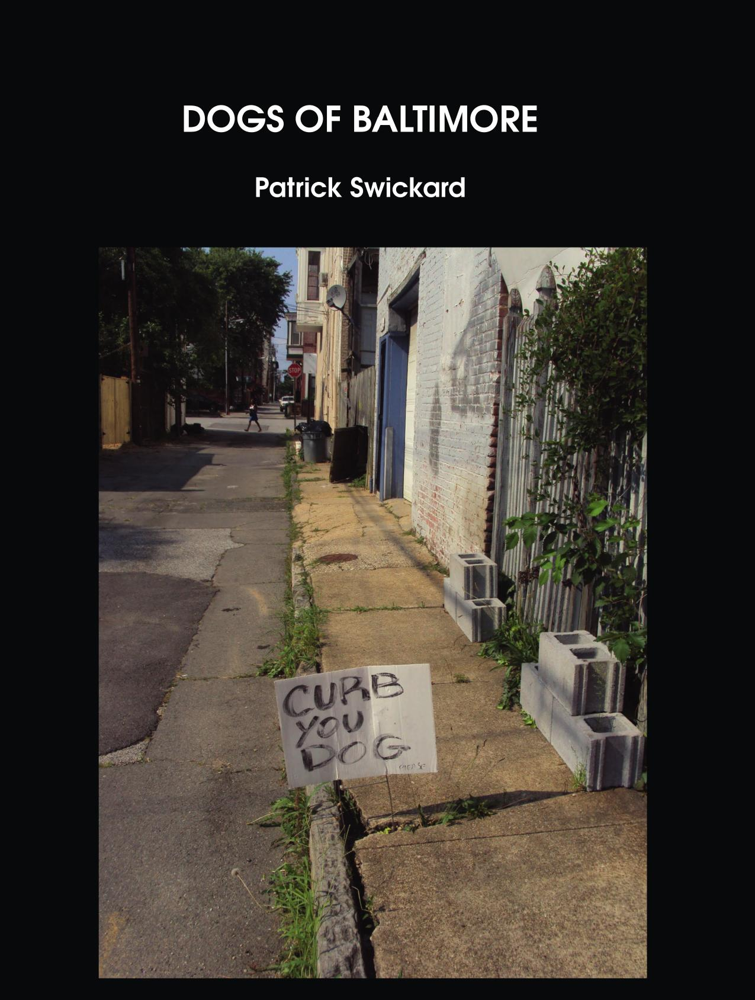
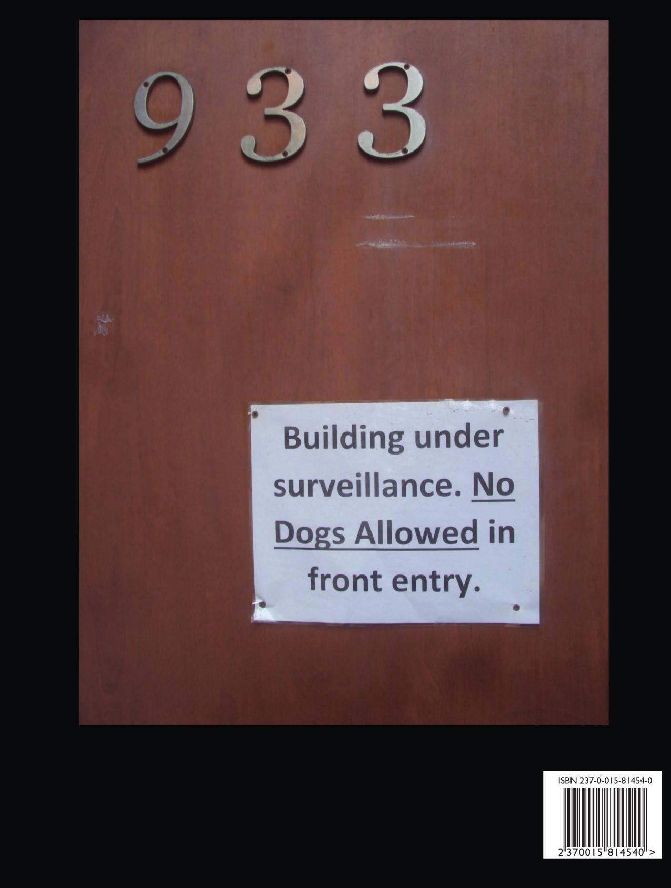

Dogs of Baltimore
Patrick Swickard
8.5"x11" paperback, 156 pages
Life on all fours
When you're out there walking the streets
May compete
Nothin' but the dog in ya
Bow-wow-wow-yippie-yo-yippie-yeah
Bow-wow-yippie-yo-yippie-yeah
Bow-wow-wow-yippie-yo-yippie-yeah
Bow-wow-yippie-yo-yippie-yeah
- George Clinton
Woof woof! This book features full-page images of everything dog-related. Plenty of dog-related signs and graffiti. Lots of great content related to where dogs are and are not allowed to walk, shit, piss, exist, and do other things that dogs like to do in the city.
Also available in a double volume with Dogs of Baltimore, see Dogs of Baltimore/Gods of Baltimore.